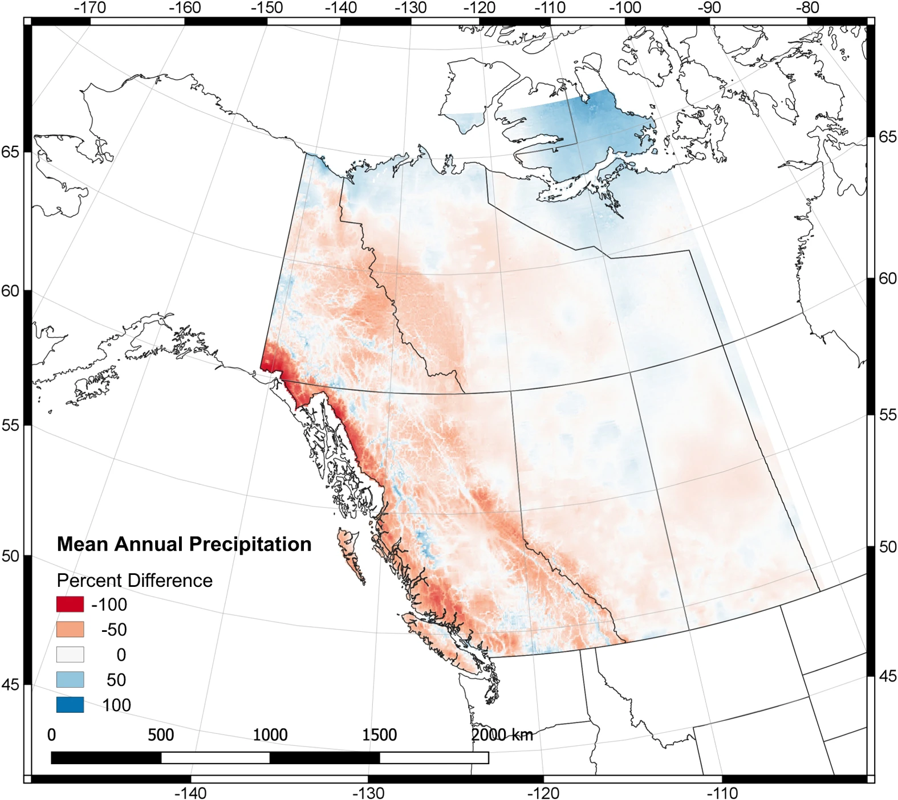

ANUSPLIN Canadian Gridded Climate Dataset (NRCanMET)
Summary Description
The ANUSPLIN Canadian Gridded Climate Dataset (NRCanMET) is a high-resolution, station-based gridded climate dataset produced by Natural Resources Canada (NRCan) and Agriculture and Agri-Food Canada. It provides daily and monthly interpolated climate variables across Canada, utilizing the Australian National University Spline (ANUSPLIN) model. The dataset provides information coninuous in time and space for climate research and environmental studies.
ToDo: Add PCIC Blend info, recent references

Dataset Characteristics
Strengths and Limitations
Key Strengths of NRCanMET
- High Spatial Resolution: Provides detailed climate information at ~10 km resolution across Canada.
- Long-Term Coverage: Spans over six decades, enabling comprehensive climate trend analyses.
- Quality-Controlled Data: Utilizes quality-controlled station observations for interpolation.
- Consistent Methodology: Employs the ANUSPLIN model, ensuring consistency in data interpolation.
- Accessibility: Available through platforms like ClimateData.ca and the Pacific Climate Impacts Consortium.
Key Limitations of NRCanMET
- Temporal Gaps: Station density varies over time, potentially affecting data consistency in certain regions.
- Interpolation Limitations: Accuracy depends on the density and distribution of input stations.
- Lack of Real-Time Updates: Dataset extends only up to 2015, limiting its use for recent climate analyses.
- Limited Variables: Focuses primarily on temperature and precipitation; other climate variables are not included.
Available Variables in NRCanMET
For details click on variable group to uncollapse
Typical Applications
links to Electricity Sector Applications
Data Access
References
Hutchinson, M.F., McKenney, D.W., Lawrence, K., Pedlar, J.H., Hopkinson, R.F., Milewska, E., Papadopol, P., 2009. Development and testing of canada-wide interpolated spatial models of daily minimum–maximum temperature and precipitation for 1961–2003. Journal of Applied Meteorology and Climatology 48, 725–741. https://doi.org/10.1175/2008JAMC1979.1
McKenney, D.W., Hutchinson, M.F., Papadopol, P., Lawrence, K., Pedlar, J., Campbell, K., Milewska, E., Hopkinson, R.F., Price, D., Owen, T., 2011. Customized spatial climate models for north america. Bulletin of the American Meteorological Society 92, 1611–1622. https://doi.org/10.1175/2011BAMS3132.1
Werner, A.T., Schnorbus, M.A., Shrestha, R.R., Cannon, A.J., Zwiers, F.W., Dayon, G., Anslow, F., 2019. A long-term, temporally consistent, gridded daily meteorological dataset for northwestern north america. Scientific Data 6, 180299. https://doi.org/10.1038/sdata.2018.299